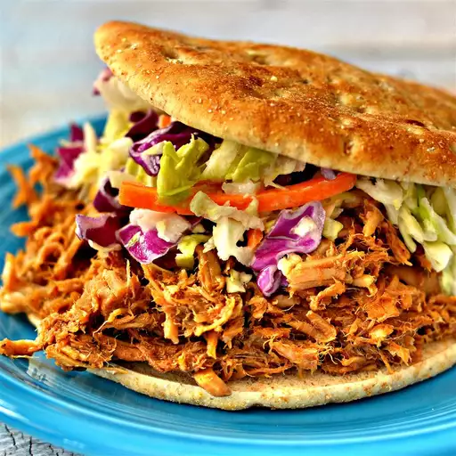

Pulled Pork

Description
Pork meat low and slow. Preferably made in a BBQ but if you make in your oven it's still very delicious.
Ingredients
- 1 cup water
- 1 cup cider vinegar
- 2 tablespoon oil
- 1 pork shoulder (about 5 pound)/li>
- ¼ cup packed brown sugar
- 1 teaspoon ground black pepper
- 1 teaspoon seasoned salt
Steps
- Combine water and vinegar in a slow cooker set to Low.
- Rub oil over entire pork shoulder and let rest for 5 minutes.
- Mix brown sugar, seasoned salt, black pepper, cumin, cayenne pepper, garlic powder, onion powder, and cinnamon together in a bowl; rub over entire pork shoulder. Place pork shoulder into the slow cooker. Cover and cook on Low for 6 to 8 hours.
- Transfer pork shoulder to a work surface and let rest for 10 minutes. Discard cooking liquid from the slow cooker. Place pork back into the slow cooker and shred. Stir in barbecue sauce.